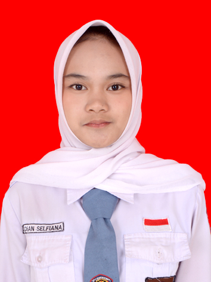

Junior Web Developer dengan minat pada pengembangan website dan pengelolaan basis data. Memiliki pengetahuan dalam PHP, HTML, CSS, Laravel, dan MySQL. Terbiasa mengembangkan website perpustakaan dan company profile, serta memahami pengelolaan data dan penerapan fitur CRUD. Memiliki kemampuan berpikir logis, teliti, bertanggung jawab, dan mampu bekerja sama dalam tim.
Lihat Project
Perkenalkan, saya Dian Selfiana, siswi SMKN 1 Kawali jurusan Rekayasa Perangkat Lunak (RPL) tahun 2024–2027. Saya memiliki minat dalam bidang teknologi, khususnya pengembangan website dan pengelolaan basis data. Saya memiliki pengetahuan dalam pemrograman PHP, HTML, CSS, framework Laravel, serta pengelolaan database menggunakan MySQL dan phpMyAdmin. Saya juga terbiasa menggunakan Visual Studio Code sebagai aplikasi pengembangan. Saya merupakan pribadi yang teliti, bertanggung jawab, mampu berkomunikasi dan bekerja sama dalam tim, serta memiliki kemampuan manajemen waktu yang baik.
Mengembangkan website company profile sebagai media informasi dan pengenalan profil perusahaan. Membuat halaman beranda, profil perusahaan, produk/layanan, artikel, galeri, dan kontak. Menggunakan Laravel, PHP, dan MySQL serta mengelola data melalui database.
September 2026Mengembangkan website perpustakaan untuk membantu pengelolaan data dan informasi buku. Mempelajari penerapan fitur CRUD serta pengelolaan basis data.
Mempelajari pembuatan dan pengelolaan basis data menggunakan MySQL dan phpMyAdmin untuk mendukung kebutuhan pengembangan website.
Terlibat dalam pengembangan website serta pengelolaan data selama kegiatan Praktik Kerja Lapangan. Membantu proses pembuatan dan pengelolaan website sesuai kebutuhan perusahaan. Memperoleh pengalaman kerja serta meningkatkan kemampuan dalam bidang pengembangan web.
SMKN 1 Kawali
Jurusan Rekayasa Perangkat Lunak (RPL)
2024 - 2027
Ujian Kompetensi Keahlian (UKK)
Junior Web Developer
SMKN 1 Kawali
Oktober 2026
Terima kasih telah mengunjungi portofolio saya. Berikut informasi kontak dan media sosial saya.